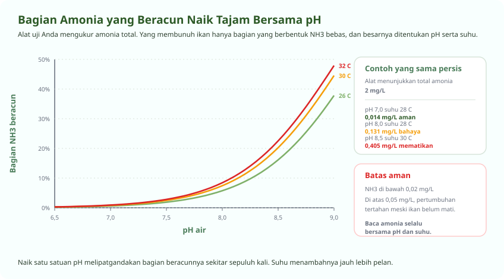

Anda Memelihara Air, Bukan Memelihara Ikan
Kalimat lama yang benar adanya
Hampir semua kegagalan budidaya ikan bermula dari air, bukan dari penyakit. Penyakit biasanya datang belakangan, setelah air lebih dulu membuat ikan tertekan. Karena itu modul pertama ini bukan soal ikan, melainkan soal delapan angka yang menentukan hidup matinya.
Yang membedakan pembudidaya berpengalaman dari pemula bukan kemampuan mengobati, melainkan kebiasaan mengukur sebelum ada yang sakit.
| Parameter | Rentang aman | Batas berbahaya | Seberapa sering diukur |
|---|---|---|---|
| Oksigen terlarut (DO) | Di atas 4 mg/L | Di bawah 3 mg/L | Setiap hari, terutama subuh |
| Suhu air | 26 sampai 30 derajat | Di atas 33 atau di bawah 22 | Pagi dan sore |
| pH | 6,5 sampai 8,0 | Di bawah 6 atau di atas 8,5 | Pagi dan sore |
| Amonia tak terion (NH3) | Di bawah 0,02 mg/L | Di atas 0,05 mg/L | Dua sampai tiga kali seminggu |
| Nitrit (NO2) | Di bawah 0,5 mg/L | Di atas 1 mg/L | Dua kali seminggu, lebih sering saat awal |
| Alkalinitas | 100 sampai 150 mg/L CaCO3 | Di bawah 50 mg/L | Seminggu sekali |
| Volume flok | 20 sampai 40 ml/L | Di atas 50 ml/L | Setiap hari pada sistem bioflok |
| Kecerahan | 25 sampai 35 cm | Di bawah 20 cm | Dua kali seminggu |
Amonia, Angka yang Paling Sering Salah Dibaca
Alat Anda mengukur total amonia, tetapi yang membunuh hanya sebagian kecilnya
Amonia di dalam air ada dalam dua bentuk yang saling berimbang. Amonium (NH4+) relatif aman. Amonia bebas (NH3) beracun, merusak insang, dan mematikan pada kadar yang sangat rendah. Alat uji yang dijual umum mengukur jumlah keduanya sekaligus, disebut total amonia atau TAN.
Perbandingan keduanya ditentukan pH dan suhu. Makin tinggi pH, makin besar bagian yang berbentuk NH3 beracun. Inilah sebabnya dua kolam dengan angka amonia sama persis bisa berakhir sangat berbeda.

Persentase amonia beracun dari total amonia
| pH | Suhu 26 derajat | Suhu 28 derajat | Suhu 30 derajat | Suhu 32 derajat |
|---|---|---|---|---|
| 6,5 | 0,19 | 0,22 | 0,25 | 0,29 |
| 7,0 | 0,60 | 0,69 | 0,80 | 0,91 |
| 7,5 | 1,89 | 2,16 | 2,48 | 2,83 |
| 8,0 | 5,74 | 6,54 | 7,43 | 8,42 |
| 8,5 | 16,14 | 18,12 | 20,25 | 22,53 |
| 9,0 | 37,83 | 41,16 | 44,53 | 47,91 |
Kalau amonia terlanjur tinggi
-
Hentikan pakan lebih dulu, jangan tambah apa pun
Pakan adalah sumber amonia. Puasakan ikan satu sampai dua hari. Ikan sehat tahan puasa jauh lebih lama daripada tahan amonia.
-
Jangan buru-buru menaikkan pH
Kalau pH sedang rendah, itu justru sedang melindungi ikan Anda karena menahan amonia dalam bentuk amonium. Menaikkan pH mendadak saat amonia tinggi bisa mematikan seisi kolam dalam hitungan jam.
-
Perkuat aerasi
Oksigen yang cukup mempercepat bakteri mengubah amonia. Ikan yang tertekan amonia juga lebih butuh oksigen daripada biasanya.
-
Tambahkan sumber karbon pada sistem bioflok
Molase mendorong bakteri heterotrof menyerap amonia menjadi protein flok. Ini cara tercepat menurunkan amonia, dan dijelaskan di modul berikutnya.
-
Ganti sebagian air kalau semua cara di atas belum cukup
Ganti 10 sampai 20 persen dengan air yang sudah diendapkan dan suhunya mirip. Penggantian besar sekaligus membuat ikan tertekan karena perubahan mendadak.
pH dan Alkalinitas
Dua hal berbeda yang sering dikira sama
pH menyatakan seberapa asam air pada saat itu. Alkalinitas menyatakan seberapa kuat air menahan pH agar tidak berubah. Kolam beralkalinitas rendah bisa punya pH yang bagus pagi ini lalu terjun bebas sore nanti.
Pada sistem bioflok, alkalinitas ikut habis dimakan proses. Setiap satu gram amonia yang diubah bakteri nitrifikasi memakan sekitar 7 gram alkalinitas. Kalau tidak pernah ditambah, alkalinitas akan menipis, pH ikut jatuh, dan bakteri berhenti bekerja tepat saat Anda paling membutuhkannya.
| Yang terjadi | Penyebab tersering | Yang harus dikerjakan |
|---|---|---|
| pH pagi rendah, sore tinggi, selisih lebih dari 1 | Alkalinitas rendah dan alga banyak | Tambah kapur untuk menaikkan alkalinitas, kurangi cahaya masuk |
| pH turun terus dari minggu ke minggu | Alkalinitas habis dipakai nitrifikasi | Tambah kapur pertanian atau dolomit secara berkala |
| pH tinggi di atas 8,5 seharian | Alga sangat padat, air hijau pekat | Pasang paranet, kurangi pakan, perkuat pengadukan air |
| pH jatuh mendadak setelah hujan deras | Air hujan asam dan alkalinitas rendah | Tutup kolam saat hujan, siapkan cadangan alkalinitas |
Mengukur dengan Benar
Alat yang salah pakai memberi rasa aman yang keliru
-
Ukur oksigen saat subuh, bukan siang
Titik terendah oksigen terjadi menjelang matahari terbit, setelah semalaman ikan, bakteri, dan alga sama-sama bernapas tanpa fotosintesis. Angka siang hari selalu terlihat bagus dan tidak memberi tahu apa pun.
-
Celupkan alat DO sampai kedalaman kerja, lalu tunggu
Ukur di kedalaman sekitar setengah tinggi air, jangan di permukaan. Diamkan sampai angkanya berhenti bergerak, biasanya sepuluh sampai tiga puluh detik. Angka yang diambil terburu-buru selalu lebih tinggi dari kenyataan.
-
Ukur di beberapa titik, bukan hanya satu
Kolam bundar berdiameter tiga meter pun bisa punya sudut mati yang oksigennya jauh lebih rendah. Titik itulah yang akan lebih dulu membunuh ikan.
-
Kalibrasi alat pH setiap minggu
Pakai cairan kalibrasi pH 4,01 dan 6,86. Simpan probe dalam larutan penyimpan, jangan pernah dibiarkan kering, karena probe kering rusak permanen dalam hitungan hari.
-
Catat, jangan hanya dilihat
Satu angka tidak berarti apa-apa. Yang memberi tahu Anda ada masalah adalah perubahannya dari hari ke hari. Buku tulis sederhana sudah cukup.
Pertanyaan Seputar Modul Ini
Yang paling sering ditanyakan peserta
Berapa pH air kolam lele yang baik?
Antara 6,5 dan 8,0, dan yang lebih penting adalah stabil. Selisih pH pagi dan sore sebaiknya tidak lebih dari satu satuan. pH yang naik turun tajam setiap hari lebih merusak daripada pH agak tinggi yang tetap.
Kalau pH Anda bergoyang jauh, akarnya hampir selalu alkalinitas yang rendah. Menambah kapur untuk menaikkan alkalinitas ke 100 sampai 150 mg/L CaCO3 akan menenangkan pH dengan sendirinya.
Bagaimana cara menurunkan pH air kolam lele secara alami?
Kurangi penyebabnya lebih dulu. pH tinggi di kolam hampir selalu karena alga terlalu padat, yang menyerap karbon dioksida di siang hari. Pasang paranet, kurangi pakan berlebih, dan perkuat pengadukan air.
Menambah molase juga menurunkan pH perlahan karena memicu bakteri heterotrof. Hindari asam kuat, karena penurunan mendadak jauh lebih berbahaya daripada pH tinggi yang stabil. Satu peringatan penting: kalau amonia sedang tinggi, pH rendah justru sedang melindungi ikan, jadi jangan diutak-atik sebelum amonianya turun.
Bagaimana cara mengukur DO atau oksigen terlarut yang benar?
Pakai DO meter, ukur menjelang subuh, di kedalaman sekitar setengah tinggi air, dan tunggu sampai angkanya berhenti bergerak. Ukur di beberapa titik, termasuk sudut yang arus airnya paling lemah.
Angka siang hari selalu terlihat bagus karena alga sedang berfotosintesis, jadi tidak berguna sebagai peringatan. Yang menentukan adalah titik terendah menjelang matahari terbit. Di bawah 3 mg/L ikan mulai berkumpul di permukaan, dan itu sudah terlambat.
Kenapa hasil uji amonia saya rendah tetapi ikan tetap mati?
Karena alat uji umum mengukur total amonia, sedangkan yang beracun hanya amonia bebas atau NH3. Bagiannya ditentukan pH dan suhu. Pada pH 7 hanya sekitar 0,7 persen dari total yang beracun, tetapi pada pH 8,5 bisa 18 sampai 20 persen.
Contohnya, total amonia 2 mg/L pada pH 7 dan 28 derajat menghasilkan amonia beracun 0,014 mg/L yang masih aman. Angka total yang sama pada pH 8,5 dan 30 derajat menghasilkan 0,405 mg/L, dua puluh kali di atas batas aman. Selalu baca amonia bersama pH dan suhu.
Berapa alkalinitas yang dibutuhkan kolam bioflok?
Antara 100 dan 150 mg/L CaCO3. Di bawah 50 mg/L, pH akan mudah terjun dan bakteri pengurai amonia melambat.
Alkalinitas ikut habis dipakai proses. Setiap gram amonia yang dioksidasi bakteri nitrifikasi memakan sekitar 7 gram alkalinitas, sedangkan yang diserap bakteri heterotrof memakai sekitar 3,6 gram. Karena itu kolam bioflok perlu penambahan kapur berkala, bukan sekali di awal saja.
Seluruh modul boleh dibaca berurutan atau melompat sesuai kebutuhan. Lihat daftar pelatihan budidaya ikan, atau semua jalur pelatihan.